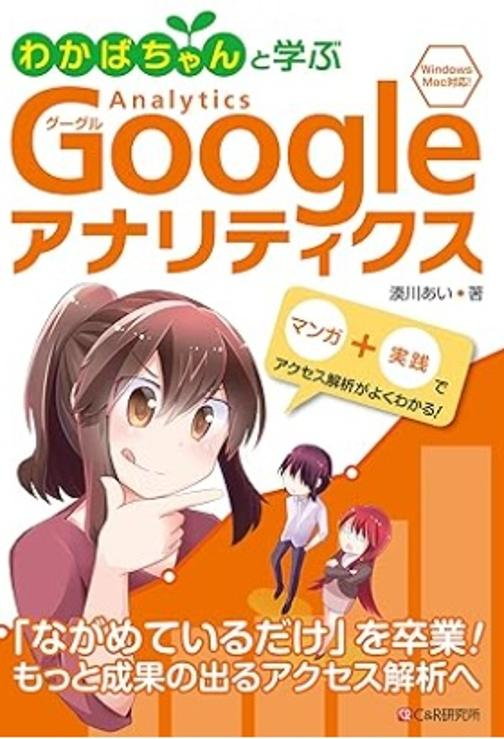
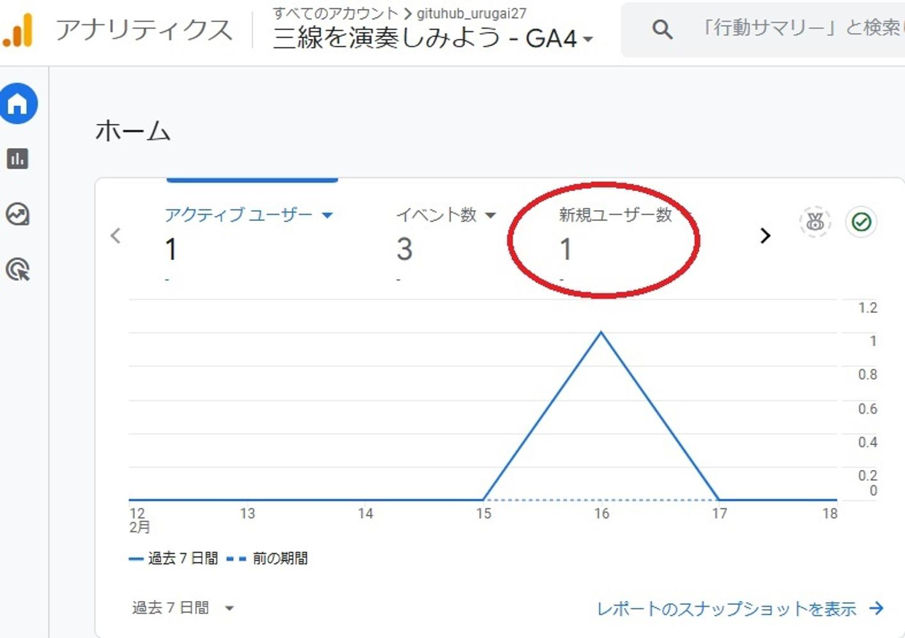

うるがいの話 ある日
最新: Googleアナリティクス【うるがいの話 ある日】とは 一日だけのプログです
『うるがいの話』の最新一日だけのプログで、通信料が少なく経済的だ。カニの画像をクリックすると全ての日付が載る『うるがいの話』サイトを表示します
|
|
【うるがいの話】 うるがい(ｳﾙｶﾞｲ urugai)とは、『もずくがに』の名前でとても大きくなります。 |
|---|---|
|
|
【カミマヤーの話】 猫のことを方言でマヤーといいます。カミマヤー（kamimayaa）とは、神の猫のことです。 |
|
【たながぁの音楽】 たながぁ（ﾀﾅｶﾞｰ tanagaa）とは手長えびのことで、何種類かあり大きいのは車 エビぐらいになります。 |

|
【ぶながぁの話】 ぶながぁ(ﾌﾞﾅｶﾞｰ bunagaa)とは、赤い髪の毛、赤い身体、そして身長は１ｍ２０ｃｍ ぐらい、川の蟹を食べているの目撃された。場所は沖縄県国頭郡大宜味村のと ある村僕の隣近所に住んでいる爺さんから、聞いた話です。 |
|
|
【ギーマの話】 ギーマ(giima)とは、山原の里山に咲くスズランに似た、 花を付けます。実は食べられます、 気が付くと口の周りが紫になっています。 |
2025年02月19日 (水）Googleアナリティクス
15:20
なにげなく、図書館の書籍検索をしていたら『わかばちゃんと学ぶ
Googleアナリティクス〈アクセス解析・Webマーケティング入門〉
単行本（ソフトカバー） – 2018/3/27

が、検索一覧に載った。わかばちゃん、久しぶりじゃんと借りた。
本を読み始めると残念、解析の方式が変更になったため、本の内容
が全く使えない。よくあることだが・・・・・、出版２０１８はこ
の業界では古いのである。で、ほかにはとまたもや図書館の書籍を
検索すると、２０２１年９月の電子書籍『1週間でGoogleアナリ
ティクス4の基礎が学べる本』があったのでパソコンで電子書籍を
読む。ウーン、図書館の電子書籍はイマイチ解像度が・・・・・。
さてと実践してみるかと、ユーチューブ動画『てぃんさぐぬ花 工
工四 三線』から、リンクしている『無料の楽譜ソフトで三線を演
奏してみよう』にページのアクセスが、解析できるようにした。
そして、どうなのか確認することにした。ガガーン！！、なんと１
件だけ、『てぃんさぐぬ花 工工四 三線』はその日は１１件も視聴
があったのに。
検索サイトで、『無料の楽譜ソフトで三線を演奏してみよう』を打
ち込むが、検索一覧に載らない。フムフム、なんらの対応が必要だ
ベ。

おっと、思い出した。そもそも本を借りたきっかけは、とあるメル
マガに
↓読者解除予防リンク。↓
月に一度は
ブログのリンクを
クリックしてください。
「読んでるよ!」のサインになります。
ホー、どうやって読者を判断しているのだろう？との疑問があった
から。疑問はまだとけてない・・・・。